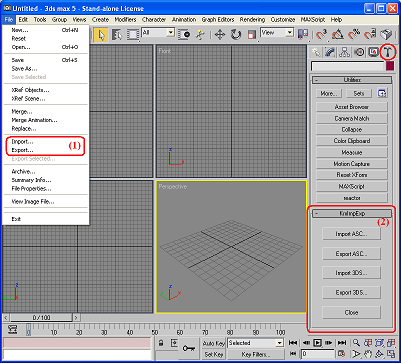
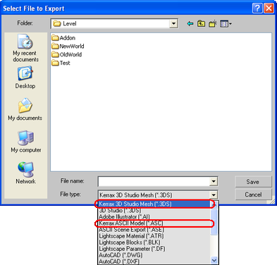

1. После инсталляции у вас будет два различных варианта плагинов. Первый вариант представляет собой набор обычных плагинов импорта и экспорта для 3ds max, которые были написаны на С++ с использованием библиотеки 3ds max SDK. Запустить этот вариант плагинов можно из главного меню, пункты "File->Import" и "File->Export". Второй вариант плагинов - это набор скриптов на языке MAXScript. Эти скрипты могут быть запущены из окна "KrxImpExp" в панели "Utilities". Первый вариант плагинов работает быстрее (C++ быстрее, чем MAXScript), а наличие второго варианта предоставляет вам свободу выбора.

2. Выбирайте правильные типы файлов в диалоге выбора файла во время импорта и экспорта. Поддерживаемые типы файлов: "Kerrax 3D Studio Meshes (*.3DS)" и "Kerrax ASCII Models (*.ASC)".
